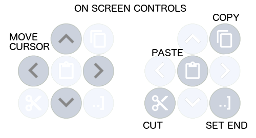

Add your first song: Tap the 'plus' icon in the header, enter a song name (you can change this later) and tap OK. You'll now have a new song and be in edit mode. You can use the on screen keyboard to enter chords and text. Alternatively see 'Import/Export' below.
Edit song text: When you add a song you start off in edit mode. Here you have a custom keyboard for entering chords, text and labels. When you enter a root note such as 'F#' the keyboard automatically sets itself up for you to enter a chord symbol, such as 'maj7'. Note that the 'major' button simply adds a space as there is no 'symbol'. To finish editing, click the 'pen' icon to toggle to the standard song view. Also, see 'The Editor' below.
See more of the page / resize: In either song edit or standard view, pinch to zoom in or out and swipe to scroll.
Enter flats from the keyboard: There is a button at the top left of the keyboard that will toggle between sharps and flats.
Undo changes: If you make a change you do not like you can tap 'Revert to saved' from the menu.
Save a song / go back to the songs list page: There is no need to 'save'. All your changes are saved automatically. To go back to the songs list: Tap the left arrow button at the top of the screen OR swipe in quickly from the left edge of the screen.
Hear the notes of a chord: You'll hear the notes of a chord when you type in the editor or when you tap a chord in the standard song view. In the song view you can also step through the chords using the arrow buttons at the very bottom of the screen.
Transpose a song: You can transpose up or down in semitone steps using the up or down arrow buttons on the title bar. All changes are saved automatically. If you find that the song has ended up with flats when you wanted sharps (or vice verse) go to the menu (top right) and tap 'Transpose fix'.
Use the metronome and rhythms: In the standard song view tap the 'drum' icon at the bottom left. Here you can choose a rhythm and set a tempo. These are saved with the current song. Tap the 'PLAY' button to hear the rhythm. Close the panel by tapping the left arrow (bottom left). The rhythm will continue playing if it is already playing.
Notebook thinks 'A' or 'Am' is a chord, but it is a lyric. How do I fix that? : Edit the text so that Notebook knows it isn't a chord, for example use lower case for the 'A' or place a character before the A (e.g. '.A').
Fit song to screen width: In the standard view, double tap a word or any space to fit the longest line to the screen width.
Change the display options: See 'Preferences' below.
Record and playback Audio: See 'Audio Clips' below.
Get songs into and out of Notebook: See 'Import/Export' below.
***BACKUP my songs***: See 'Import/Export' below.
The song text editor has a smart keyboard that is designed to allow for quick entry of chord progressions. Tap a root note and the keyboard knows to show chord symbols next. Tap a chord symbol and the editor knows to add a space and then show root notes again. However, the keyboard also has sub pages so that you can add free text and edit the text in any way you wish. The editor also supports cut, copy and paste, and selection of words, lines and arbitary blocks of text.
Note that copy and paste use the device wide paste buffer so you can copy text between apps.
To position the input cursor: tap the screen at the desired position or use the arrow buttons to position the red input cursor.
To select a word or chord: double tap.
To select a line: triple tap.
To select a block: Set the red input cursor at the start of the block. Tap the 'SET END' button (see image) then tap the position of the end of the block... you can now use the arrow buttons to position the blue end cursor. Tap the 'SET END' button again to return the controls to the red input cursor.
To cut, copy or paste: Tap the appropriate on screen button (see image). You can also use the menu 'Copy song to clipboard' function to copy all of the song text.
To access sub pages of the keyboard: Tap the blue buttons on the keyboard, for example 'LABELS' to move to the labels sub page, 'TEXT' to move to the qwerty keyboard, 'MORE' to access the symbols sub page and 'CHORDS' to get back to the chord entry keyboard.
Adding complex chords: Notebook will play back pretty much anything that 'looks' like a chord. To enter chords that don't appear by default use the sub pages of the on screen keyboard to access other characters. For example, to enter 'C#mb9' tap 'C#', 'LABELS', 'TEXT', 'm', 'b', 'MORE', '9', 'space'. That's complex compared to the built in chords so remember to use copy'n'paste where you can!
In addition to copy and paste, Notebook supports the standard sharing mechanisms in iOS. So, to get a song into Notebook you in fact start in a different app and 'Share' the text of the song. It could be that you have the text of a song in an email or a message, or in a '.txt' file that you have on your device. To get this text into Notebook you need to use the iOS 'Share' feature in the app that already has the text.
For example if you are browsing a 'guitar tab' wesite in Safari and are on the page of a song, you can use the share feature in iOS. This video shows how this works:
After you have shared text from another app, when you next visit the main songs list in Notebook you will be taken to the import screen where you can complete the import. You will be shown some options and a preview of the song text:
Import options
Exporting a single song via share: When viewing a song you can export the song as text using 'Share song...' from the menu. This uses standard sharing mechanisms that allows you to send the text to other apps such as your email app or messaging aps.
Exporting a single song via copy: When viewing a song you can export the song as text using 'Copy song to clipboard' from the menu. The song text is then available to paste in other apps.
Creating a BACKUP file / Exporting multiple songs via share: When viewing the main song list or a list of songs you can export the songs as a text file using 'Share all...' from the menu. This shares a text file called 'musiciansnotebook_allsongs.txt' to other apps. For example you can (and SHOULD) share the file to iCloud drive or send it as an email attachment to yourself to make an off device copy of all of your the song texts. You can then later share that file back to Notebook if for any reason your songs were lost. Note that audio clips are not exported with the song text so the files are not large. However, you can share individual audio clip files from the full screen audio clips panel.
Notebook allows up to ten audio clips to be recorded with each song. Once you have created a song (and added some text) you will see in the standard song view there is a microphone button at the bottom right of the screen. Tapping on this opens the audio panel. The first time you do this you will be prompted to allow access to the device's microphone.
Once in the audio panel you can record clips. Clips are associated with pre set text labels (the same ones that appear on the editor keyboard) and if your song text contains the label you will find that you can tap the label in the song view to replay the clip. Labels that have an associated audio clip appear green in the song view. Note that the label must end with ':' and have a space after it in the song text.
You can also play back audio clips in the audio panel and make the panel fullscreen (the button beside the close button) to access the other audio playback features.
From the song view, tap the menu button (top right) and select 'Options...' The options shown apply to all songs:
Edit mode